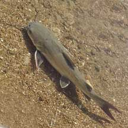
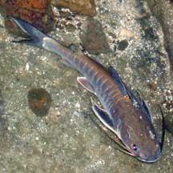
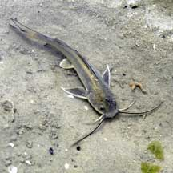

|
|
| fishes text index | photo index |
| Phylum Chordata > Subphylum Vertebrate > fishes > Order Siluriformes |
| Sea
catfishes Family Ariidae updated Sep 2020 Where seen? These whiskery fishes usually leave for deeper waters at low tide. Sometimes, you might come across one trapped in a pool at low tide. Fishermen, however, often catch them when angling from jetties. Small juveniles were once seen in numbers on Chek Jawa among the seagrasses. What are sea catfishes? Sea catfishes belong to the Family Ariidae. According to FishBase: The family has 14 genera and 120 species. Most of the members of this family live in the sea. Only a few found in freshwater. They are found in tropical and subtropical waters. Features: To about 20-30cm long. The blunt snout usually has 3, rarely 2, pairs of 'whiskers' (called barbels) around the mouth. There are bony plates on the head and near the dorsal fin. The tail fin is forked. These fishes have a venomous spine on the dorsal fin, and on each of the pectoral fins. These spines are used to protect themselves against predators, and not to catch prey. Their stings can be excruciating and long-lasting. So please don't handle any catfishes. All the fishes in this page are Hexanematichthys sagor previously known as Arius sagor. Thanks to Dr Ng Heok Hee for identifying them. |
 This large one (about 30cm) was caught by a fisherman. Pulau Sekudu, May 04 |
 This large one (20cm) was trapped in a rock pool at low tide. Chek Jawa, Jan 02 |
 Small ones (about 6cm) are sometimes seen in large numbers on the shores. Chek Jawa, Jun 03 |
| Catfish babies: The males usually
carry the relatively large eggs in his mouth until the eggs hatch. Sometimes mistaken for eel-tail catfishes. Eel-tail catfishes also have barbels but their tail fins are eel-like and not forked as in the sea catfishes. What do they eat? Adapted for hunting in murky waters for prawns, worms and other titbits hiding on or in the ground. The barbels around the catfish's mouth help find prey where visibility is poor. The barbels have taste buds to help sense food. They don't use their barbels to sting. Human uses: Some species are important commercial food fishes, sold fresh or salted. Status and threats: None of our sea catfishes are listed among the threatened animals of Singapore. However, like other creatures of the intertidal zone, they are affected by human activities such as reclamation and pollution. Over-collection can also have an impact on local populations. |
*Species are difficult to positively identify without close examination.
On this website, they are grouped by external features for convenience of display.
| Sea catfishes on Singapore shores |
On wildsingapore
flickr
|
| Family
Ariidae recorded for Singapore from Ng, H. H., 2012. The ariid catfishes of Singapore. *from FishBase +other observations (Singapore Biodiversity Records, The Biodiversity of Singapore)
|
Links
|